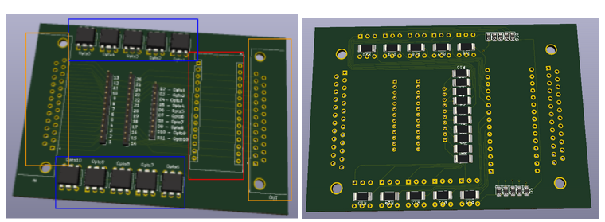
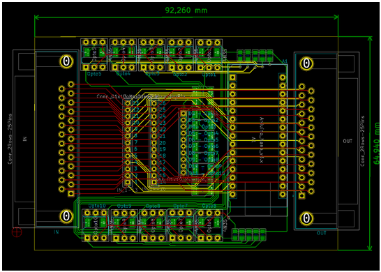

La nécessité pour les entreprises de surveiller leurs équipements les a amenées à s'intéresser aux objets connectés. Des sociétés comme Thales Alenia Space doivent être en mesure d'anticiper les besoins de maintenance de leurs équipements afin de gagner du temps et de l'argent. Notre objectif était donc de construire un système IoT rassemblant des mesures en temps réel sur les composants internes d'un banc d'essai. Les données recueillies seront ensuite stockées et affichées sur un tableau de bord pour que les ingénieurs de Thales puissent les analyser. Nous avons séparé notre architecture en plusieurs parties, chacune étant encapsulée dans un conteneur Docker. Un script Python collecte la température et la consommation de courant des composants. Un lecteur SSD héberge une base de données NoSQL qui stocke les données récupérées. Un dashboard codé en React affiche les données significatives et permet la configuration du système. Enfin, une API utilisant le framework Python et Flask fait le lien entre toutes les parties. Le résultat est un prototype fonctionnel, basé sur un Raspberry Pi, qui supporte notre architecture. Cependant, nous n'avons pas pu mettre en œuvre certaines fonctionnalités telles que la surveillance des relais. Les travaux futurs devraient se concentrerons sur l'amélioration de la prédictibilité du système à l'aide d'algorithmes de machine learning et sur l'amélioration de la modularité des capteurs afin de collecter des données plus diverses.
Concernant la partie électrique, Thales Alenia Space nous a demandé de détecter dans leurs racks des paramètres qui peuvent être utiles pour améliorer la gestion de leurs appareils. Les composants ont une grande sensibilité aux températures élevées et aux pics de courant. C'est pourquoi nous devons fournir un système capable de capturer et de sauvegarder des données afin de voir ce qui peut être dangereux pour le système et de remplacer le composant cassé dès que possible. De plus, le but initial était de compter le nombre de commutations sur le relais de radiofréquence. Ce composant a un certain nombre de changements de canaux mécaniques (environ un million) et il peut se casser après (ou avant) que ce seuil soit dépassé. Personne ne sait où se situe le problème, il faut donc du temps pour le trouver et le résoudre. C'est pourquoi, notre système peut fournir des informations sur le rack et aider les techniciens à comprendre la source du problème.
Pour récupérer les changements de canaux, nous avons décidé d'utiliser un Arduino qui fournit un grand nombre d'E/S analogiques et numériques. Pour voir si nous pouvons utiliser cette méthode et pour éviter d'endommager l'Arduino, nous devons nous assurer que la tension et le courant ne sont pas trop élevés. Nous avons déterminé à l'aide d'un multimètre que la tension était d'environ 5V et le courant d'environ 400 mA. Ces valeurs ont été mesurées sur un Radiall R574 et lorsque nous regardons les spécifications techniques des autres relais RF utilisés dans les racks, l'intensité et la tension peuvent être plus élevées. Pour faire face à ce problème, nous pensons à utiliser des optocoupleurs qui peuvent séparer un circuit en deux circuits distincts. Cela permet donc d'isoler l'Arduino des surcharges. Le composant choisi est le 4N35. Nous avons conçu des circuits imprimés (PCB) qui sont connectés entre le relais et le câble. Grâce à cela, l'équipe de Thales doit pouvoir mettre ce composant facilement sans penser aux connexions entre l'Arduino et les optocoupleurs. De plus, afin de satisfaire tous les types de relais, nous avons dû faire une mise au point avant de l'utiliser. La connexion entre le relais et les optocoupleurs doit être faite avec un câble de câblage manuel entre les deux. Avec toutes ces spécificités, nous avons réalisé le circuit imprimé, comme vous pouvez le voir sur cette image.  Vous pouvez voir sur la figure précédente, la position de l'Arduino en rouge, les optocoupleurs en bleu et les connecteurs orange pour les relais et les câbles de commande. Cette vue schématique rendue dans Kicad est très utile pour voir où on peut mettre les composants. Nous avons également une autre vue montrant toutes les connexions câblées, plus difficile à lire lorsque vous montrez tous les câbles, comme vous pouvez le voir sur cette image.  Avant de faire cela, nous devons connecter sur une autre vue tous les composants et les configurer avec l'empreinte. Nous pouvons choisir deux façons différentes de placer le circuit imprimé :
J'ai pu mobiliser de nombreuses compétences dans ce projet :
Ce projet a été l'une de nos premières collaborations avec une société telle que Thales qui était, en l'occurrence, notre client. Au
cours de ces premiers pas dans le domaine industriel, nous avons découvert les différentes étapes de la réalisation d'un projet dans
un grand groupe.
De plus, nous avons pensé que cette expérience était bien intégrée dans la formation de l'ISS puisqu'elle nous a permis d'avoir une
approche pratique sur différents sujets que nous avons étudiés durant le cursus (architecture orientée service, conteneurisation,
gestion de projet...).